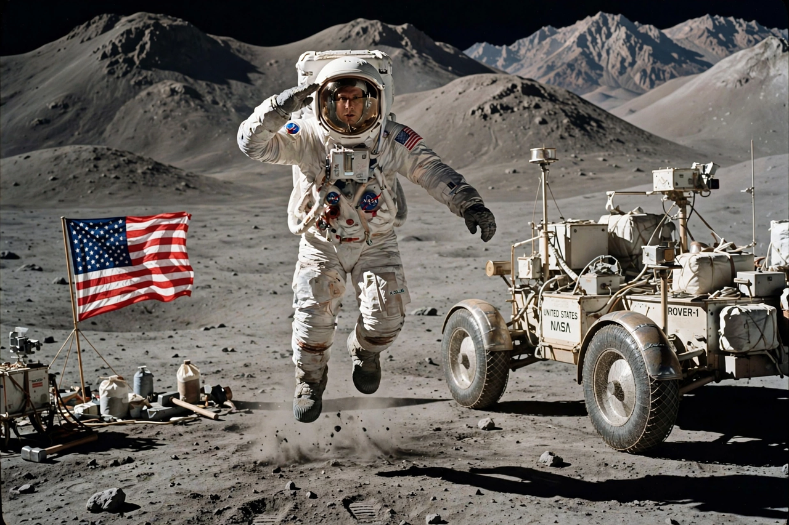

Apollo 16
From Wikipedia, the free encyclopedia
| Apollo 16 | |
|---|---|
| Crew | John Young, Ken Mattingley, Charles Duke |
| Launch | 16 April 1972 |
| Landing site | Descartes Highlands |
| Duration | 11 days |

Young's grand jump.Apollo 16 was the tenth crewed Apollo mission and the fifth to land on the Moon, in April 1972 — the only landing in the lunar highlands, at the Descartes formation, chosen to sample the Moon's ancient crust. John Young and Charles Duke spent three days on the surface with the second Lunar Roving Vehicle, while Ken Mattingley conducted orbital science above.
The mission nearly aborted twice: before launch a fuel-tank problem threatened delay, and after the LM separated, a fault in the command module's engine gimbal system forced a six-hour hold in lunar orbit while engineers devised a workaround — landing permission came with hours to spare. On the surface the crew gathered 95.7 kg of samples, including the 11.7 kg 'Big Muley', the largest single rock Apollo returned, and set a lunar speed record of about 17.7 km/h in the rover that still stands.
Records and flavour
Duke — at 36 the youngest person to walk on the Moon — left a photograph of his family on the surface, where it remains. Young, flying his fourth spaceflight, later commanded the first Space Shuttle mission; the crew's orange-juice-fuelled war on potassium deficiency (to combat irregular heartbeats seen in Apollo 15) gave the flight a running joke about gas that the open microphones kept broadcasting.
See also
John Young (astronaut) · Charles Duke · Apollo 15 · Lunar Roving Vehicle